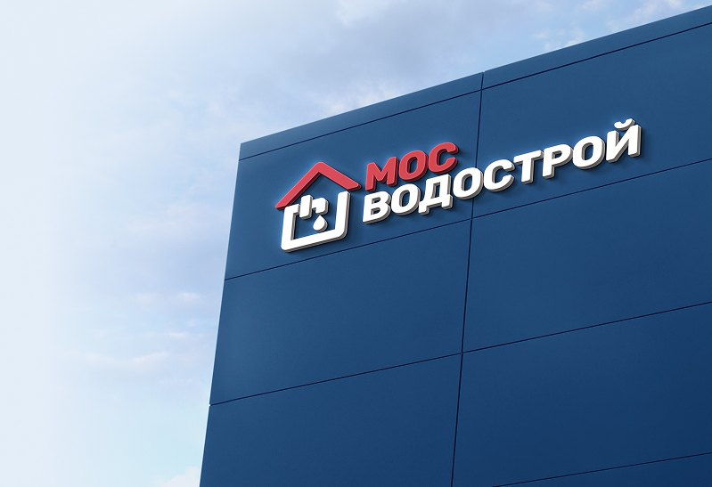

<section class="section about-us-section mb-100">
	<div class="block-container">
		<div class="about-us-block">
			<div class="about-us-block__content">
				<div class="block-heading">
					<h1 class="block-heading__title">О компании</h1>
					<div class="block-heading__text">
						<p>
							АО «Мосводострой» — ведущая строительная компания в сфере инженерной инфраструктуры, специализирующаяся
							на строительстве, реконструкции и модернизации объектов водоснабжения и водоотведения. Уже более 70 лет мы
							вносим значимый вклад в развитие коммунальной и экологической инфраструктуры Москвы и Московской области.
						</p>
						<p>
							Компания была основана в 1951 году как специализированная организация для решения задач водостроительства
							в стремительно растущем городе Москве. С тех пор «Мосводострой» прошёл путь от подрядной организации до
							признанного лидера в отрасли.
						</p>
					</div>
				</div>
			</div>
			<div class="about-us-block__image">
				
				
			</div>
		</div>
	</div>
</section>